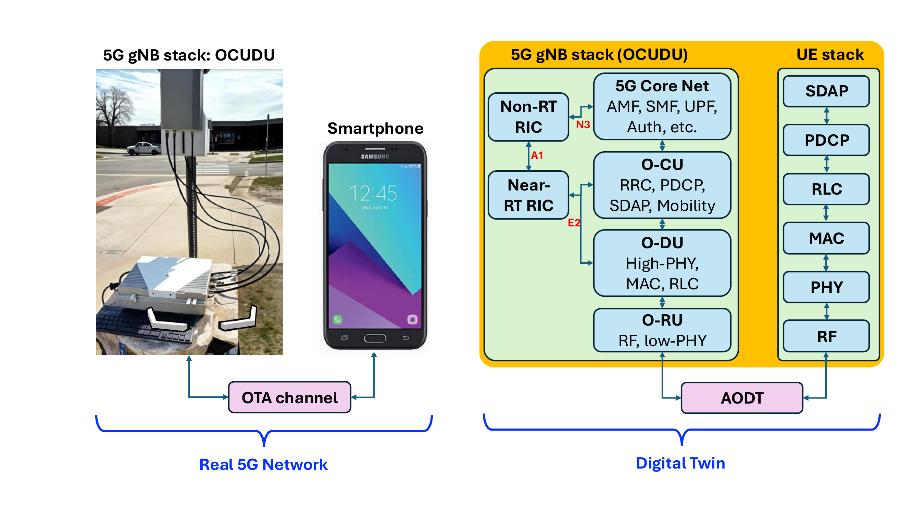
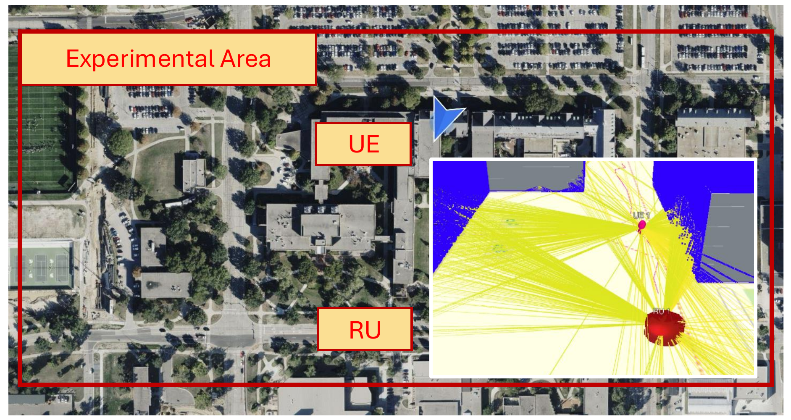
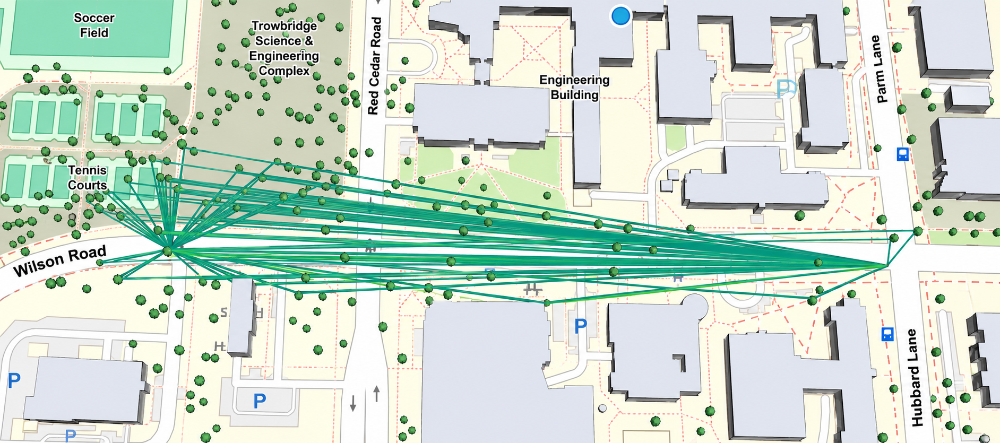

Digital Twin for 5G AI-RAN: Sim-to-Real Gap Measurement and Optimization
Abstract
Digital twins are key enablers for AI-native radio access networks (AI-RANs), supporting data generation, policy validation, and what-if analysis without disrupting operational networks. However, their utility depends on how faithfully they reproduce cellular behavior, while wireless digital-twin fidelity remains poorly understood. We present, to our knowledge, the first systematic study of the sim-to-real gap in a cellular digital twin. We construct a twin of a live 5G O-RAN deployment by coupling a map-based ray-tracing channel simulator with a full-stack O-RAN platform and quantify channel- and network-level discrepancies using real-world measurements. We then develop Digital-Twin Parameter Optimization (DTPO), a Bayesian optimization framework that calibrates environmental and radio parameters. Experiments show that the calibrated twin cannot reproduce instantaneous channel realizations accurately but matches network-level behavior, with mean gaps of 2.3%, 5.1%, and 5.5% for per-user throughput, block error rate, and channel quality indicator. Moreover, AI models and policies trained in the calibrated twin transfer to the real deployment without fine-tuning; a slicing policy achieves 89.1% eMBB satisfaction, 95.3% mMTC success, and a 3.1% URLLC delay-violation rate. These findings show that cellular digital-twin fidelity should be evaluated by network-level behavior rather than exact channel realizations.

DTPO Experimental Area
